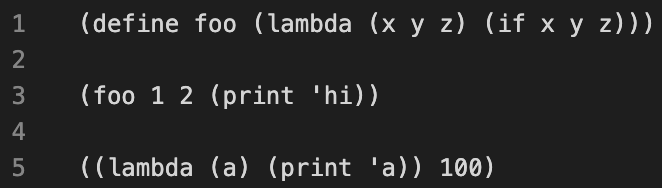
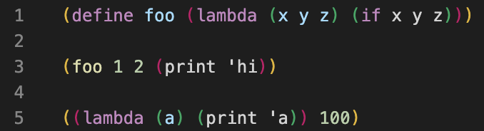
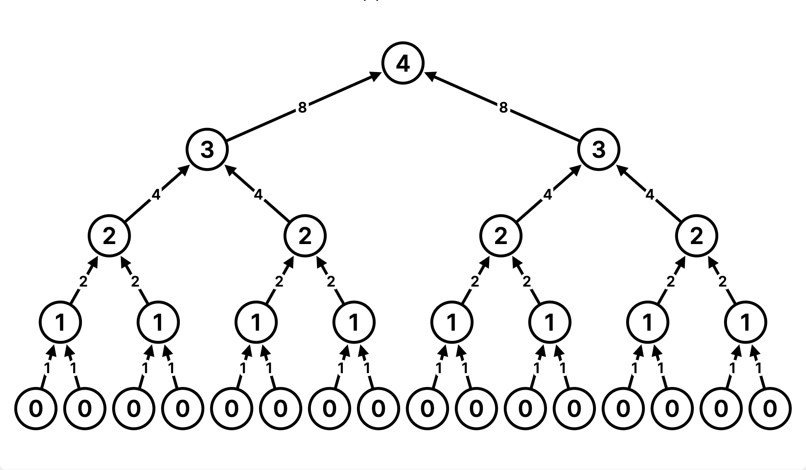

作业 5：链表、效率、Scheme
说明
下载 hw05.zip。在压缩包中，你会找到一个名为 hw05.py 的文件，以及一份 ok 自动评分器的副本。
关于 Ok 的使用：如果你对如何使用 Ok 有任何疑问，请参阅 本指南
阅读材料：你可能会觉得以下参考资料有用：
评分：作业按照正确性评分。每做错一道题，总分减一分。本次作业满分为 2 分。
每个 Scheme 作业都附带了 61A 的 Scheme 解释器。要启动它，在终端中输入 python3 scheme。要加载一个名为 f.scm 的 Scheme 文件，输入 python3 scheme -i f.scm。要退出 Scheme 解释器，输入 (exit)。
推荐的 VS Code 扩展
我们建议你安装 vscode-scheme 扩展，这样可以高亮显示括号。
之前：

之后：

此外，Scheme 作业还可以使用 61a-bot（安装说明）VS Code 扩展。这个机器人也已经集成到 ok 中。
必做题
链表
下面是 Link 类的实现：
class Link:
"""A linked list is either a Link object or Link.empty
>>> s = Link(3, Link(4, Link(5)))
>>> s.rest
Link(4, Link(5))
>>> s.rest.rest.rest is Link.empty
True
>>> s.rest.first * 2
8
>>> print(s)
(3 4 5)
"""
empty = ()
def __init__(self, first, rest=empty):
assert rest is Link.empty or isinstance(rest, Link)
self.first = first
self.rest = rest
def __repr__(self):
if self.rest:
rest_repr = ', ' + repr(self.rest)
else:
rest_repr = ''
return 'Link(' + repr(self.first) + rest_repr + ')'
def __str__(self):
string = '('
while self.rest is not Link.empty:
string += str(self.first) + ' '
self = self.rest
return string + str(self.first) + ')'| 可变链表 | 普通链表 | |
|---|---|---|
| 特性 | - 用自定义对象 Link 表示 - 有方法和属性 - 可变 |
- 用抽象数据类型表示 - 有选择器函数 - 不可变 |
| 示例 |
|
|
| 解释 |
Link 是可变的，因为我们创建了一个对象 Link，它的属性允许我们直接访问其中的元素。这使我们能够改变这些元素，从而修改 Link。
|
link 不是可变的，因为它的选择器函数只把元素的值返回给我们。我们无法改变或重新赋值这些值。
|
Q1：连接链表
编写函数 add_link，它接收两个链表 link1 和 link2，返回一个把 link2 连接到 link1 末尾的新链表。
你可以假设输入的链表是浅层的；它的任何元素本身都不是另一个链表。
注意：你不能假设输入的两个链表长度相同。
挑战（选做）：不要假设输入的链表是浅层的（即你的输入可以是嵌套链表）。提示：使用内置的
type函数。
def add_links(link1: Link, link2: Link) -> Link:
"""Adds two Links, returning a new Link
>>> l1 = Link(1, Link(2))
>>> l2 = Link(3, Link(4, Link(5)))
>>> new = add_links(l1, l2)
>>> print(new)
(1 2 3 4 5)
>>> new2 = add_links(l2,l1)
>>> print(new2)
(3 4 5 1 2)
"""
"*** YOUR CODE HERE ***"
用 ok 测试你的代码：
python3 ok -q add_linksQ2：可变映射
实现 deep_map_mut(func, s)，它把函数 func 应用于链表 s 中的每个元素。如果某个元素本身也是一个链表，就递归地把 func 也应用到它的元素上。
你的实现应当修改原链表。不要创建任何新的链表。该函数返回 None。
提示：你可以使用内置的
isinstance函数判断某个元素是否为链表。>>> s = Link(1, Link(2, Link(3, Link(4)))) >>> isinstance(s, Link) True >>> isinstance(s, int) False
构造检查：本题最后一个测试用例检查你的函数没有创建任何新的链表。如果你没通过这个 doctest，请确认你没有通过调用构造函数来创建链表，即
s = Link(1)
def deep_map_mut(func, s: Link) -> None:
"""Mutates a deep link s by replacing each item found with the
result of calling func on the item. Does NOT create new Links (so
no use of Link's constructor).
Does not return the modified Link object.
>>> link1 = Link(3, Link(Link(4), Link(5, Link(6))))
>>> square = lambda x: x * x
>>> print(link1)
(3 (4) 5 6)
>>> link2 = Link(1, Link(Link(Link(2, Link(3))), Link(4)))
>>> double = lambda x: x * 2
>>> print(link2)
(1 ((2 3)) 4)
>>> # Disallow the use of making new Links before calling deep_map_mut
>>> Link.__init__, hold = lambda *args: print("Do not create any new Links."), Link.__init__
>>> try:
... deep_map_mut(square, link1)
... deep_map_mut(double, link2)
... finally:
... Link.__init__ = hold
>>> print(link1)
(9 (16) 25 36)
>>> print(link2)
(2 ((4 6)) 8)
"""
"*** YOUR CODE HERE ***"
用 ok 测试你的代码：
python3 ok -q deep_map_mut效率
除了把算法分为指数、平方、线性、对数和常数之外，我们还引入了大 Θ 记号，但不会深入讲解运行时间分析的细节。
这里有一个细微的差别：在 AHUT_1A 中，我们针对输入做运行时间分析。在后续课程（如 61B、CS 170 等）中，运行时间分析是针对输入的规模（即比特数）进行的。如果这让你困惑，不用太在意。只需保持一致，并告诉学生：我们考虑的是输入变化时函数的运行时间会如何变化。
在这门课中，我们主要关注正确性——程序是否产生正确的输出。然而，计算机科学家也对构造高效的问题解法感兴趣。量化效率的一种方式是确定函数的运行时间如何随输入变化。在这门课中，我们用函数执行的操作次数来衡量它的运行时间。
函数 f(n) 具有……
- 常数运行时间，如果
f的运行时间不依赖于n。它的运行时间是 Θ(1)。 - 对数运行时间，如果
f的运行时间与log(n)成正比。它的运行时间是 Θ(log(n))。 - 线性运行时间，如果
f的运行时间与n成正比。它的运行时间是 Θ(n)。 - 平方运行时间，如果
f的运行时间与n^2成正比。它的运行时间是 Θ(n^2)。 - 指数运行时间，如果
f的运行时间与b^n成正比，其中b是某个常数。它的运行时间是 Θ(b^n)。
例 1：计算 square(1) 需要一次乘法操作，计算 square(100) 也需要一次乘法操作。一般来说，调用 square(n) 产生的操作次数是常数，不随 n 变化。我们说 square 的运行时间复杂度是 Θ(1)。
| input | 函数调用 | 返回值 | 操作 |
|---|---|---|---|
| 1 | square(1) |
1*1 | 1 |
| 2 | square(2) |
2*2 | 1 |
| ... | ... | ... | ... |
| 100 | square(100) |
100*100 | 1 |
| ... | ... | ... | ... |
| n | square(n) |
n*n | 1 |
例 2：计算 factorial(1) 需要一次乘法操作，而计算 factorial(100) 需要 100 次乘法操作。随着 n 增大，factorial 的运行时间线性增长。我们说 factorial 的运行时间复杂度是 Θ(n)。
| input | 函数调用 | 返回值 | 操作 |
|---|---|---|---|
| 1 | factorial(1) |
1*1 | 1 |
| 2 | factorial(2) |
2*1*1 | 2 |
| ... | ... | ... | ... |
| 100 | factorial(100) |
100*99*...*1*1 | 100 |
| ... | ... | ... | ... |
| n | factorial(n) |
n*(n-1)*...*1*1 | n |
例 3：考虑下面这个函数：
def bar(n):
for a in range(n):
for b in range(n):
print(a,b)计算 bar(1) 会调用一次 print，而计算 bar(100) 会调用 10,000 次 print。随着 n 增大，bar 的运行时间平方增长。我们说 bar 的运行时间复杂度是 Θ(n^2)。
| input | 函数调用 | 操作次数（print 调用次数） |
|---|---|---|
| 1 | bar(1) |
1 |
| 2 | bar(2) |
4 |
| ... | ... | ... |
| 100 | bar(100) |
10000 |
| ... | ... | ... |
| n | bar(n) |
n^2 |
例 4：考虑下面这个函数：
def rec(n):
if n == 0:
return 1
else:
return rec(n - 1) + rec(n - 1)计算 rec(1) 会执行一次加法操作。计算 rec(4) 会执行 2^4 - 1 = 15 次加法操作，如下图示所示。
在计算 rec(4) 的过程中，有两次对 rec(3) 的调用、四次对 rec(2) 的调用、八次对 rec(1) 的调用，以及 16 次对 rec(0) 的调用。
所以我们有八个 rec(0) + rec(0) 的实例、四个 rec(1) + rec(1) 的实例、两个 rec(2) + rec(2) 的实例，以及一个 rec(3) + rec(3) 的实例，总共 1 + 2 + 4 + 8 = 15 次加法操作。

随着 n 增大，rec 的运行时间指数增长。特别地，当 n 增加 1 时，rec 的运行时间大约翻倍。我们说 rec 的运行时间复杂度是 Θ(2^n)。
| input | 函数调用 | 返回值 | 操作 |
|---|---|---|---|
| 1 | rec(1) |
2 | 1 |
| 2 | rec(2) |
4 | 3 |
| ... | ... | ... | ... |
| 10 | rec(10) |
1024 | 1023 |
| ... | ... | ... | ... |
| n | rec(n) |
2^n | 2^n - 1 |
求一个函数运行时间的增长量级的技巧：
- 如果函数是递归的，确定递归调用的次数以及每次递归调用的运行时间。
- 如果函数是迭代的，确定内层循环的次数以及每次循环的运行时间。
- 忽略系数。执行
n次操作的函数和执行100 * n次操作的函数都是线性的。 - 取最大的增长量级。如果函数的第一部分运行时间是线性的，第二部分是平方的，那么整个函数的运行时间就是平方的。
在这门课中，我们只考虑常数、对数、线性、平方和指数这几种运行时间。
Q3：质数
编写一个函数，在 O(sqrt(n)) 时间内返回一个数是否为质数，其中 sqrt 表示平方根。你可以假设 n >= 2。
提示：你不需要检查每一个比 n 小的数是否能整除 n
from math import sqrt
def is_prime_sqrt(n: int) -> bool:
"""Tests whether a number N is prime or not. Implement this function
in O(sqrt(n)) time. You can assume n >= 2
>>> is_prime_sqrt(2)
True
>>> is_prime_sqrt(67092481)
False
>>> is_prime_sqrt(524287)
True
>>> is_prime_sqrt(2251748274470911)
False
>>> is_prime_sqrt(6700417)
True
>>> is_prime_sqrt(44895587973889)
False
>>> is_prime_sqrt(2147483647)
True
>>> is_prime_sqrt(67280421310721)
True
"""
# sqrt(k) will give the square root of k as a floating point (decimal)
"*** YOUR CODE HERE ***"
用 ok 测试你的代码：
python3 ok -q is_prime_sqrtScheme
3 * (4 + 2)，我们写成：
scm> (* 3 (+ 4 2))
18与 Python 一样，求值一个调用表达式时要：
- 求值运算符，它应该求值得到一个过程（procedure）。
- 从左到右求值各个操作数。
- 把过程作用到已求值的操作数上。
下面是几个使用内置过程的例子：
scm> (+ 1 2)
3
scm> (- 10 (/ 6 2))
7
scm> (modulo 35 4)
3
scm> (even? (quotient 45 2))
#tdefine 形式用于给符号赋值。它的语法如下：
(define <symbol> <expression>)scm> (define pi (+ 3 0.14))
pi
scm> pi
3.14求值 define 表达式时：
- 求值最后一个子表达式（
<expression>），在这个例子里它求值为3.14。 - 把这个值绑定到符号 (
symbol) 上，在这个例子里就是pi。 - 返回该符号。
define 形式也可以定义新的过程，详见「定义函数」一节。
cond 特殊形式可以包含多个谓词（类似 Python 中的 if/elif）：
(cond
(<p1> <e1>)
(<p2> <e2>)
...
(<pn> <en>)
(else <else-expression>))每个子句中的第一个表达式是谓词，第二个表达式是与该谓词对应的返回表达式。else 子句是可选的；如果所有谓词都不为真，它的 <else-expression> 就是返回表达式。
求值规则如下：
- 按顺序求值谓词
<p1>、<p2>、……、<pn>，直到其中一个求值为真值（#f以外的任何值）。 - 求值并返回第一个求值为真的谓词表达式所对应的返回表达式。
- 如果所有谓词都不求值为真，并且存在
else子句，则求值并返回<else-expression>。
例如，下面这个 cond 表达式返回距离 x 最近的 3 的倍数：
scm> (define x 5)
x
scm> (cond ((= (modulo x 3) 0) x)
((= (modulo x 3) 1) (- x 1))
((= (modulo x 3) 2) (+ x 1)))
6Q4：幂运算
实现一个过程 pow，它把一个数 base 提升到非负整数 exp 次幂。递归调用 pow 的次数应当随 exp 对数增长，而不是线性增长。例如，(pow 2 32) 应当产生 5 次递归 pow 调用，而不是 32 次。
提示：
- x2y = (xy)2
- x2y+1 = x(xy)2
例如，216 = (28)2 且 217 = 2 * (28)2。
你可以使用内置谓词
even?和odd?。此外，过程square已经为你定义好了。Scheme 没有
while或for语句，所以请用递归来解决这道题。
(define (square n) (* n n))
(define (pow base exp)
'YOUR-CODE-HERE
)用 ok 测试你的代码：
python3 ok -q powQ5：反复求立方
实现 repeatedly-cube，它接收一个数 x，并将它立方 n 次。
下面是 repeatedly-cube 的一些行为示例：
scm> (repeatedly-cube 100 1) ; 1 cubed 100 times is still 1
1
scm> (repeatedly-cube 2 2) ; (2^3)^3
512
scm> (repeatedly-cube 3 2) ; ((2^3)^3)^3
134217728(define (repeatedly-cube n x)
(if (zero? n)
x
(begin
(define y ___)
___)))
用 ok 测试你的代码：
python3 ok -q repeatedly-cubeQ6：Cadr 与 Caddr
定义过程 cadr，它返回列表的第二个元素。再定义 caddr，它返回列表的第三个元素。试着用 car 和 cdr 来表示 cadr 和 caddr。
(define (cddr s)
(cdr (cdr s)))
(define (cadr s)
'YOUR-CODE-HERE
)
(define (caddr s)
'YOUR-CODE-HERE
)用 ok 测试你的代码：
python3 ok -q cadr-caddr本地查看得分
你可以在本地查看本次作业每道题的得分，运行：
python3 ok --score历年考题
作业中还会包含往年的考题供你练习。这些题目不需要提交；如果你想练练手，可以随意尝试！
- 2019 年秋季期末 Q7b：Mull It Over
- 2018 年春季期中考试二 Q4(a)：序列